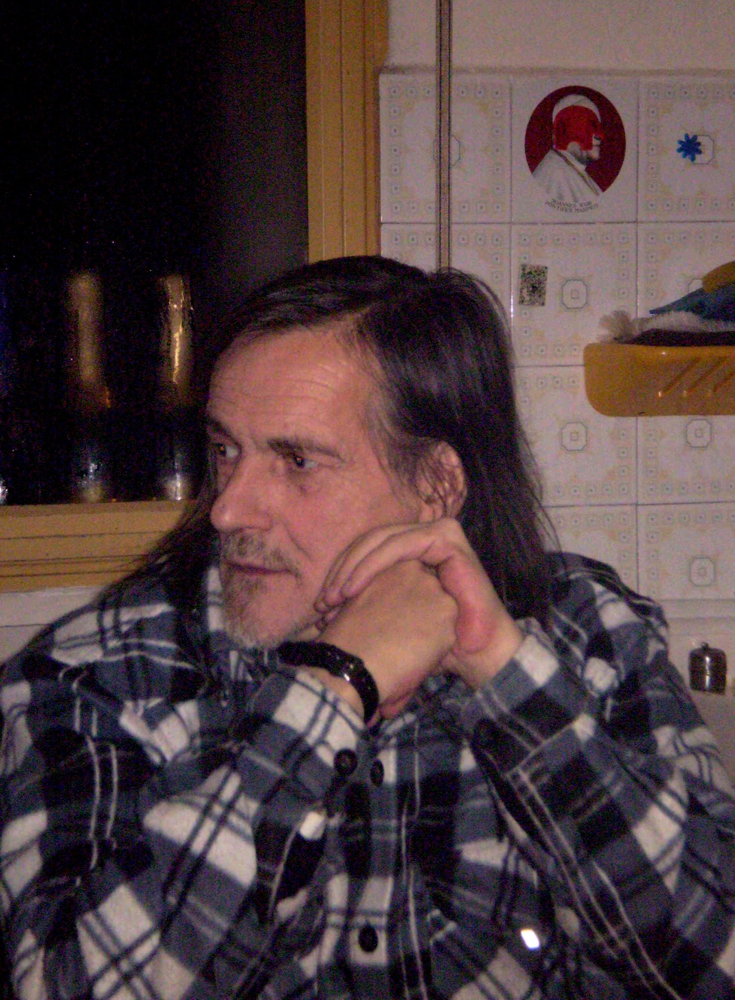

Esistono autori che inventano nuovi procedimenti di scrittura, altri ancora che si astengono dal pubblicare. Se la prima tipologia è attualmente particolarmente fiorente, l’esistenza della seconda è invece piuttosto a rischio: infatti, dove la tecnologia digitale ha favorito varie e interessanti sperimentazioni, ha anche permesso di infestare il mondo di parole anche a perfetti analfabeti. Ad ogni modo, tali tipologie di autori sono tra quelle ricordate da Ezra Pound in “L’ABC del leggere”, e Roberto Vannucci, da me chiamato Giambologna per la tendenza affabulatoria di inserirsi in tutte le storie di una Bologna di tempi ormai andati, adorava questo libro, e presso la sua casa sull’Appennino si dedicava perlopiù al leggere e allo scrivere, pratiche assunte come cose serissime seppure in modi sempre divertiti. È quindi scomparso nel luglio 2012 - per essere più precisi, si è lasciato morire, perché probabilmente gli è sembrata la cosa più sensata da fare per rinascere davvero - lasciando uno scatolone colmo di quaderni di ogni colore, nei quali ha registrato minuziosamente studi e letture, alcune poesie, varie riflessioni, compilate secondo una scrittura nitida e ben scandita, sospesa in uno spazio meditativo e incontaminato. Esponente di una cultura che rifiutava ogni forma di istituzionalizzazione, era provvisto di una laurea in Lettere conseguita circa nel Sessantotto seppur con studio tenace, si era interessato di religioni orientali diventando poi monaco zen, ed era anche astrologo con il gusto matematico degli astri e quello junghiano dei simboli: con lui potevi parlare di stelle e pianeti senza sentirti troppo imbecille. Sfornito di computer, ne manteneva una vaga curiosità, e su Internet non ha ricevuto nessuna menzione a parte questa, smentendo la banale e superstiziosa credenza che la Rete raccolga automaticamente tutto ciò che esiste. Al massimo della sua tecnologia, si divertiva a spedire sms, caratterizzati dall’essere esenti dai vizi linguistici quali abbreviazioni barbare, iconismo spinto, abuso di k e di x, altre volgarità; soltanto in un secondo tempo, eventualmente, trascriveva a penna quanto da lui scritto sul cellulare. Qui seguono i sorprendenti resoconti del suo accudimento di Saro, una specie di cane-leone davvero ingombrante e piuttosto vivace, ormai anche lui scomparso. Saro il mio cane, Roberto il vicino di casa: grandi amici perduti a cui sarò sempre grato e che non perderò mai. Ecco quindi avventure immaginarie assurde e spassose, condite da riflessioni originali e brillanti, dove trovare forme classiche e immagini psichedeliche, echi di Jack Kerouac e Thomas Mann, toni per nulla stereotipati e soluzioni piuttosto indispensabili. Forse, quasi senza accorgersene, nel suo strenuo opporsi alla stessa ipotesi di una qualsiasi pubblicazione, Roberto ha davvero inventato un nuovo procedimento: o quantomeno, ne ha tratto una letteratura.
Abduk kastì emeini tòs ebmeini tòs. Kasùn telèi oka. Peren? (05.02.08)
Cosa succede? (15.04.10)
Nelle mie contrade nessun evento - ogni istante diecimila eventi - (29.07.10)
La follia popola le scene di tutti i tempi, oltre tutte le soglie di definizione e di contenimento che Foucault ci ha insegnato a riconoscere. Il tratto comune di tutte le follie, lo scarto dal logos, dallo stile di volta in volta dominante, fa sì che la follia sia spettacolo e i folli attori e personaggi assoluti. Non importa quale sia il segno, positivo o negativo, che nelle diverse epoche si attribuisce alla non normalità della follia. Gli stravolgimenti del linguaggio condiviso, il linguaggio del corpo che la follia scatena, l’attenzione che i folli chiedono con ogni mezzo, sono il teatrabile, il rappresentabile. Ogni umano atto altro non è che un luogo e insieme un momento della rappresentazione cosmica che tutti noi stiamo rappresentando. A mani giunte - (18.05.07)
Il nobile Saro uscì dai suoi recinti e si diresse ad Oriente e lì pisciò, contro le gardenie. Poi si diresse ad Occidente e ivi pure pisciò, all’ombra dell’alto cedro. E così pure, nelle restanti due direzioni dell’orizzonte, il nobile Saro pisciò, ma i due punti, quello superiore e quello inferiore, li onorò con cumuli di merda. Conclusosi il rituale financo nei suoi più minuziosi dettagli, ritirassi nelle sue stanze, per lo fiero pasto… E mi congedò. (12.03.08)
Se all’interno del cavetto mettiamo due fili elettrici di polarità opposta noi otteniamo la corrente elettrica, cosa otteniamo se all’interno di quel cavetto noi mettiamo vari fili elettrici di polarità variabile? (22.10.08)
L’unica cosa che mi dispiace è che la mia cervicale va da far schifo, io vado da far schifo e questo purtroppo limita un po’ i nostri tempi di escursione (che peraltro sono svariati…). Ma a parte questo Saro è fantastico, fantasioso, attore, ecc. ecc. a volte è pure un po’ stronzo… ma cosa vuoi mai…? Poveraccio… è una gran bestiola… (12.08.08)
Riflessioni sulla trasformazione del mito. Il pensiero filosofico ha sottratto al mito la riflessione sul tempo e l’ha sistematizzata. Nel mito l’intuizione di un possibile passaggio dalla realtà ordinata e sensibile ad un’altra ineffabile, inesprimibile, estranea alla misura dell’intelletto umano, ricalca l’intuizione delle due linee temporali: quella misurabile scandita dal moto degli astri, e l’altra eterna, senza principio ne fine, sulla quale s’impernia il ritmo degli universi che nascono e periscono, così come l’intuizione di una linea spaziale, connessa con la speculazione sull’eternità e sul tempo infinito. Oltreché sull’infinità della scala numerica e perfino sull’esistenza di una riserva vitale o energia vitale, intendendo per vita l’esistenza stessa di uno spazio infinito e senza forma, ma non vuoto. Va da sé che separare linee temporali e linee spaziali è del tutto arbitrario come ipostasi, ma non come funzione espressiva e quindi comunicativa. Anche in questo caso ricorderei le parole del vecchione svizzero: «Non si può proprio dire che l’energia fisica sia trasformata in vita, ma semplicemente che la trasformazione è la manifestazione della vita.» (Jung, Opere, vol. 8, pag. 51) (24.11.2008)
Io e Saro ci siamo seduti nella corretta posizione davanti alla ciotola dei croccantini in terra tra di noi e abbiamo mangiato con i bastoncini in assoluto silenzio. Poi ci siamo fatti l’inchino di rito e abbiamo salmodiato l’Om in assoluta concentrazione. Improvvisamente Saro è diventato luminoso di una luce blu e tutto è stato illuminato da un’improvvisa aura estatica e i pochi croccantini rimasti hanno preso a vorticare nella ciotola e sono esplosi nello spazio sub-lunare che ci avvolgeva. Poi ho perso conoscenza… Attualmente Saro è seduto sulla cima del pino e manda ululati ai Dalai Cani che dimorano sulle cime dei pini tuttintorno. Fra un po’ salirò anch’io per dormire con lui in posizione aerea. Che ci vuoi fare… Siamo entrambi sperimentatori… Devo andare. Saro mi fa gesti imperiosi… Non siamo rimasti a lungo sul pino com’era nostra intenzione e questo perchè la brava Bestiola Illuminata ha avuto la prodigiosa rivelazione che in Monte Mosca c’erano tutti i Dalai-Cani delle diecimila regioni dello spazio oltre il tempo… e… infatti… sono rimasto anche io abbagliato da tanto Splendore: tutti i cani erano seduti in un magico mandala che emanava potenti energie fino a Grizzana, anche se tutti i cani mi hanno convinto con argomentazioni più che convincenti che a Grizzana non se ne sarebbe accorto nessuno. Abbiamo allora pregato in coro per tutti gli esseri umani: «Che gli umani possano comprendere…» e dopo questa recita sommessa e commossa abbiamo dato inizio ad una memorabile festa. I falò sono accesi, accorrono cani e lupi da ogni direzione e Saro ed io siamo molto soddisfatti. - CONFESSIONE (è stato proprio Saro a convincermi dell’opportunità di questa confessione): ti ho preso la boccia di vino rosso che avevi da parte e me la sono scolata, mentre lui mi faceva l’occhietto dicendomi: «Poveri uomini… siete pure ladri…» Ma mentre lo diceva sogghignava… (04.08.08)
Saro è sceso in sciopero. Ha detto che di due umani come me e te ne ha piene le tasche. Ne ha dette di tutti i colori: che siamo due falliti… che io a scrivere cazzatine alla mia età sono da buttare… che quando tu suoni la tromba gli rompi i timpani… e via così per una buona mezzora. Poi ha proclamato lo sciopero; non ho ben capito in cosa consista, ma lui si è limitato a dirmi con sufficienza che sarà più esplicito nei prossimi giorni. (19.12.08)
Prima sono andato giù per pendere Saro e andare a fare un giretto… Saro non c’era… c’era, invece, ahimè, un foglio di carta da pacchi con su strani caratteri che ad un esame più attento risultava essere una lettera di addio del buon vecchio Saro, con scritto: «Sono stanco di un padrone che mi lascia sempre solo e anche dei suoi stupidi amici come te che parli parli e non combini mai un cazzo. Addio! Non mi vedrete mai più.» Ho chiamato, ho urlato, ho pianto… ma di Saro nessuna traccia. Allora ho scavalcato sette montagne e sette orizzonti, ma di Saro niente. Allora sono ricorso ai miei poteri sciamanici, sono salito per una scala che portava oltre il cielo e là, stupore, ho visto Saro che però mi ha preso a male parole e mi ha abbaiato contro. Gli ho teso la mano che lui ha selvaggiamente morso e io mi sono messo a piangere. Allora lui mi è balzato sopra per finirmi e io ho perso i sensi. Adesso sono ricoverato non so dove tutto bendato e senza la gamba sinistra. Sono anche un po’ confuso… Ti farò sapere quando io stesso ci capirò qualcosa di più, ma nutro forti dubbi. Senza una gamba, poi… (05.07.08)
«Al Casone tutto benone?»: come poeta fai proprio schifo… Ci provo anch’io: «Tutto bene il gran Sarone ti mandiamo un bel bacione.» Mah… Per me siam deficienti… A mani giunte – PS: hai per caso visto Saro? Io qui non lo vedo da nessuna parte… Sempre a mani giunte – (13.07.08)
Tutto a posto. Ho impiccato Saro (ma non ha sofferto), gli ho mozzato la testa e l’ho messa sulla porta della casa della tua simpaticissima vicina Angela. Così puoi restare tranquillamente a Bologna. (26.09.08)
Come ben sai oggi ho giustiziato Saro con la mazza. Non è stata un’esecuzione particolarmente cruenta… è morto al primo colpo e senza schizzare sangue: una probabile vasta emorragia che l’ha fatto stramazzare al suolo. Ma la vita è strana… è arrivato un Dalai-Cane che l’ha prontamente risuscitato. Adesso però pare più tranquillo ed ubbidiente, ma non lo capisco più: parla in alto-pali arcaico… A mani giunte - (18.10.08)
Questa notte Saro ha poi dormito qui perché il tempo era incerto e troppo umido. Gli ho insegnato a manovrare il camino ed è diventato un fuochista provetto. Così posso uscire con comodo che tanto al riscaldamento ci pensa lui… mette tutti i pezzi di legna a posto secondo la grossezza con cura e attenzione… dà soddisfazione… Il Gran Can Saro è stato “iniziato”. (07.11.08)
Decisamente con il telefono non siamo sincronizzati… volevo solo dirti che Saro da ieri è qui con me buono e tranquillo. Mangia, beve dorme e si gode il calduccio del camino. E io la sua compagnia. Buonanotte e a mani giunte - (8.11.2008)
Io e Saro stiamo atterrando in Scozia. Il tempo è buono e c’è una gran folla ad attenderci all’aereoporto. Sono i Sarofans… (21.04.08)
Alle prime luci dell’alba Saro e io, stanchi dell’attuale contesto, dopo un lungo e sofferto conciliabolo abbiamo deciso irrevocabilmente di partire immediatamente per il Bacino del Tarim, ricco dell’acqua di molti fiumi che scendono dal Tibet, dal Kashmir e dai monti del Pakistan. Ora siamo bivaccati davanti ad un fuoco sulle rive del lago Lob Nor. Eh… qui è un’altra vita amico mio… e anche Saro la pensa così: ha sentenziato che resterà qui punto (06.12.08)
Questa sera ci siamo spinti fino al Bacino del Tarim, oltre il deserto di Taklimakan, su, su, oltre il Tibet e la valle del Qanqan He, vicino al lago Lob Not… Io e Saro guatiamo l’oscuro orizzonte a nord, la depressione di Trupan, ai confini con il Deserto del Gobi e la Mongolia… Fa un po’ freddino ma se non ci acchiappino i predoni ce la faremo anche questa volta. Saluti da Saro che nel frattempo ha raggiunto il lago e ci si sta tuffando… (23.04.08)
Saro è molto riservato per cui non ho voluto insistere. Mi ha però fatto capire che conosce bene il lago e i suoi segreti, semplicemente non ne voleva parlare. Ad un tratto si è messo giù con occhi tristi ma fingeva perché un attimo dopo è balzato su dritto abbandonandosi ad un can-can sfrenato… Credevo non la finisse più ma dopo un tango si è avventato sulla ciotola bevendo 7 litri e 4 d’acqua in un sol colpo. Poi ha ripreso le danze… (12.08.08)
Qui la temperatura è mite e le giornate piene di semplici cose perdute. Saro ha trotterellato tutto il giorno con giovani snelle cani/femmina con occhi a mandorla mentre io perlustravo la zona. Saro ne è entusiasta. Saluti dal Bacino del Tarim – (06.12.08)
Questa notte ho dovuto fare un veloce salto nelle regioni uralo-altaiche e ho chiesto a Saro se era interessato alla spedizione. Si è messo a ballare la tarantella e a cantare… dal che ho dedotto che l’idea gli andava a fagiuolo. Siamo in un vasto altopiano in ginocchio davanti ad un monumento di squisita ierogamia canina arcaica, di cui si era persa ogni traccia. Saro è immobile e pronuncia strane parole magiche e nel frattempo scodinzola e sbadiglia… I Tungusi hanno cani a cinque zampe; gli Yakuti invece li mangiano. Saro ne è atterrito. Beh, dopo un saltino in Mesopotamia penso che torneremo al Casone e andremo a cuccia. Ne abbiamo comprata una qui abbastanza spaziosa per entrambi. Buona notte e attento ai lupi. Qui è infestato – (23.05.08)
Saro e io ci siamo smarriti e abbiamo paura… lui manda ululati raccapriccianti e io tremo e piagnucolo… interrompo perché sta arrivando un branco di lupi. Saro si è cagato vergognosamente addosso e io devo pulire con i sacchettini… e se arrivano i lupi? A mani sugli occhi (01.06.08)
…purtroppo Saro e io siamo caduti in un pozzo. Un pozzo profondo e oscuro da cui disperiamo di uscirne. Addio, caro amico di una troppo breve stagione… (17.07.08)
Non so se questo sms ti arriverà per via del credito ma soprattutto del campo che qui nel pozzo non c’è… Va malissimo… gli ultimi agonizzanti istanti… (17.07.08)
Tutto bene, Claudio. Scusa ma avevo il tel spento. Io e Saro siamo precipitati in un crepaccio, ma, come sempre, sapremo tirarci fuori da ogni impaccio… a mani giunte e che l’estasi del Dalai-Cane possa dimorare in te. (09.08.08)
Saro ha un po’ di febbre: 373 e 7… io mi stavo allarmando anche perché mi sentivo in colpa per avergliela attaccata, ma il Cane-Guaritore personale del Dalai-Cane, che passava di qui per puro caso, ha detto che non c’è da allarmarsi perché in casi come questo, di trasmissione infetta da un umano impuro, la temperatura può salire anche fino a duemila gradi… però… non avrei immaginato… e comunque gli ha prescritto tre ululati alla menta dopo i pasti. (10.08.08)
Oggi Saro e io abbiamo aiutato i suoi cugini Siberian-Cani che fanno parte della stessa etnia dei Dalai-Cani e sono perciò illuminati, ma ancora vittime dell’abitudine. Infatti credono di abitare ancora le gelide lande nordiche e così, nelle loro case fanno fuoco tutto il giorno. Io e Saro abbiamo segato 2.713 ton. di buon cedro himalayano e le abbiamo inviate telepaticamente ai suoi cugini. Dopo le abluzioni di rito ci siamo coricati. (11.08.08)
Vaste e desolate lande si estendono per centinaia di km oltre le creste innevate delle Montagne Azzurre. Saro e io vaghiamo, spiriti erranti, nell’oscurità che precede il tramonto, spinti da un gelido nordico vento. Raffiche di neve ghiacciata sferzano i nostri musi, crepacci improvvisi si aprono sinistri, e i paradisi del Dalai-Cane sono soltanto un ricordo perduto. Arranchiamo, barche contro corrente, inesorabilmente sospinti verso il nostro passato… (10.08.08)
Nel paese magico dai riflessi ambrati, dove Saro e io siamo pervenuti, Saro non si chiama più Saro, bensì Elrin il Fulvo. Così hanno deciso gli Alti Saggi riuniti sui loro alti scranni nella sala del consiglio dedicata alla Grande Madre Cagna o Grande Dea Cagna, divinità di culto in queste regioni dove ancora vivono gli ultimi regali superstiti dell’antica stirpe dei Cani, specie eletta dagli dei e amata e rispettata dagli uomini di queste contrade. Così i saggi hanno decretato, Elrin il Fulvo, dopo accese discussioni in merito. Parte della tribù sosteneva infatti Saro essere la reincarnazione di Fulvin, arcaico e primordiale dio dalla Lingua Rossa e dalle Sei Zampe; parte si spingeva sino a ipotizzare che Saro fosse la personificazione, diretta emanazione, del dio stesso. Dopo vari tafferugli adesso Saro siede su un trono di ossa e giada con una corona di costolette di maiale locale e si lecca con la lingua che è stranamente diventata rossa… è una situazione archetipica e in un certo qual senso paradossale, ma con Saro ho capito che posso aspettarmi di tutto… Mi sono accorto adesso che oltre alla lingua gli sono spuntate due nuove zampe… A presto (se mi sarà concesso…) (02.06.08)
Anche per tua grande soddisfazione, finalmente posso rivelarti (è da un po’ che lo supponevo, ma pretendevo la certezza) che Saro e io siamo Super-Eroi…! Lui si camuffa così, ma in realtà è il Cane a Sei Zampe della Supercortemaggiore che Sputa Fuoco, e io… beh, io sono io… che razza di discorsi… (12.08.08)
Questa mattina all’alba io e Saro siamo stati vittime di un vile agguato. L’ineffabile avvocato Muto e due guardie giudiziarie, tutti e tre paludati in ampi mantelli, hanno strisciato lugubramente lungo i muri, quando Saro, Guerriero Dalai-Cane senza macchia, ha mandato un possente terribile ululato e subito si è messo nella corretta posizione di combattimento. Sprovveduti non hanno neppur trovato il tempo per reagire… Io dal piano superiore sparavo con un moschetto di mio nonno, rinvenuto negli ultimi giorni in cui combatté gli austro-ungarici sul Monte Grappa. E Saro che nel prato faceva piazza pulita degli intrusi, con versi da far accapponare le pelleeeeeeee, tutto si è risolto per il meglio. Appena gli ignobili se se sono andati, Saro è salito di corsa sul tetto dove ha messo la bandiera con su scritto in campo rosso: «Dalai-Cani di tutto il mondo unitevi!»… (14.08.08)
La manifestazione del Dalai-Cane è corretta e adeguata. (09.08.08)
Io e Saro abbiamo fatto una capatina in Polonia… (22.08.08)
Scusa caro Claudio ma i servizi segreti russi ci hanno beccato… Minacciano di tradurci ai cinesi per via della questione tibetana e del Dalai-Cane. Saro è stato imprigionato e io sono in una cella sorvegliato a vista. Devo lasciarti… sento passi nel corridoio… (26.08.08)
Come va e come stai? Io e Saro deportati… ma ti dirò. Dammi tue coordinate. (28.08.08)
Macchè… oggi il buon cane è fuggito dal campo di reclusione forzata… Quando è tornato era nero inzuppato di melma cecena e ferito dai colpi di cecchini ungheresi… Ci siamo abbracciati in lacrime poi abbiamo pranzato con costoline di cane cinese… squisito… Saro si leccava i baffi… Mannaggia… di nuovo i passi che rimbombano tesi nel corridoio… Addio, amico mio… Ah Ah AAHH (27.08.08)
… il nostro spirito è libero e vola alto come l’aquila ma, ahimè, non potrai liberare i nostri corpi piagati e martoriati dalla barbarie umana… Qui si ulula, mio caro… si ulula… e c’è pianto e stridor di denti… (29.08.08)
Eh… Eh… Caro mio… Tu non immagini neppure… Saro e io in pattuglia insieme? Una Forza! Putin è un pivello… (28.08.08)
Caro amico, sono tante le nuove realtà entrate a far parte della vita di Saro in questi ultimi giorni. Tante e svariate, ma per loro stessa natura così inconosciute e inconoscibili che mi è difficile il parlarne e mi è ancora più difficile il comprenderle… tutto quel che posso dirti è che attualmente Saro è via, e precisamente in Castiglia dalla fidanzata. Di più non mi è dato né di sapere né di rivelarti… Nuove cose stanno per accadere… (03.09.08)
Saro è tornato dalla Castiglia recando un ramoscello di bacche selvatiche. Non ha voluto dirmi niente, né tantomeno entrare in particolari dettagli. Da quel che ho capito, però, pare che la Cerimonia Dalai-Canina di Accoppiamento e Fertilità sia imminente, e che sarà festeggiata qui al Casone alla presenza del Dalai Cane e officiata dal Sindaco Pietro Vicinelli. Altro non so né mi è dato sapere. Nuove trame si tessono sotto i cieli del Casone… (03.09.08)
Sono molto disperato nel dovertelo dire ma Saro credo sia impazzito… è tornato dalla Castiglia a dir poco disgustato… sputava e bestemmiava come un turco… poi è partito per la Persia, dove, sostiene lui, le Dalai-Cagne sono belle e disponibili. Sembra impazzito. Pensa solo al matrimonio e al sesso… mi ha persino detto: «Voi umani e il sesso siete realtà incommensurabili». Sono rimasto sorpreso da quest’illuminazione Dalai-Canina. A mani giunte – (04.09.08)
Il buon vecchio Saro è qui con me disteso come una puttana romana davanti al camino acceso con la ventilazione e tutto… è molto soddisfatto e mi ha pure confidato di essere stupito di come noi umani siamo riusciti a sviluppare certe tecnologie… «Non avete orecchi, avete perso l’intuito e siete dei bruti… Come cazzo fate ad inventare certe cose? C’è da stupirsene…» (26.09.08)
Bene per il cibo. Fra un pochino lo vado a prendere per spiegargli la natura-uomo perché lui ha dei dubbi… Buon viaggio (13.11.08)
Ho finito con Eliade e sono andato da Saro che mi ha chiesto: «Cazzo fai? Sei solo come un cane e mi lasci qui solo come un uomo?…» Così me lo sono portato in casa e da un vecchio telo gli ho fatto una stuoia/ cuccia che lui ha molto apprezzato sdraiandovisi subito sopra. La temperatura si è leg (05.12.08)
Eh… si… vino… non ti dimenticare che il buon Saro e io stiamo in iperuranio dove nettare ambrosia e fichette vergini (e no) sono di casa! Saro si è appena fatto una mulatta celestiale e quando lei gli ha chiesto: «Quanto mi dai, caro?», lui ha detto: «Che cazzo vuoi, lurida troia?» Per fortuna sono arrivato io che dopo 12 orgasmi procurati ad Afrodite ho messo le cose a tacere… (27.28.10)
Le seghe danno alla testa, ma anche le falci russe, i martelli asiatici, le lucciole della Giamaica, i condor paraguyani e la magia nera… Saro si sta facendo una thailandese senza seno e con un grosso uccello… ma alla bestiola piace così… Io mi sto facendo una gran sega per scrivere questo sms (credito esaurito) - (27.08.10)
Cazzo, buoni gli acidi francesi…! (27.08.10)
Me ne sono fatto un sacchetto (19.06.10)
…è successa una disgrazia… Saro e io, dopo il veloce salto ai bordelli d’iperuranio, siamo alloggiati in un quieto villaggio afghano e, dopo cena, ci siamo tutti seduti attorno ad un falò a farci una canna. Ma quando è stato il turno di Saro, lui ha tirato, ha tirato, fino a bruciarsi le dita, cioè le zampe. In preda al panico, si è avventato su due afgani, poi ha cominciato a correre intorno al fuoco lanciando raccapriccianti ululati. Allora abbiamo preso un cillum, ma ha preso fuoco e si è bruciato tutta la coda, ricominciando a correre intorno al fuoco con la coda in fiamme. Adesso riposa sognante in una tenda sotto un potente decotto d’oppio doppio. Domani partiamo per la Finlandia. La bestiola non ama il mondo arabo… (29.08.10)
Dopo la caduta del presidio appenninico dovuto ad una legione grizzanese che pretendeva pagassi i debiti, al comando della contessa Pina Rubini, che traffica in smeraldi, sono fuggito nell’iperuranio dove gli Arconti sino presi cura di me e di Saro, rimasto colpito da un’aggressione alla contessa, che a sua volta, al grido di «Contro i comunisti, Dio lo vuole!» l’ha trafitto con uno spiedino di porco. (26.08.10)
Consapevole di non disporre di una verità universalmente valida, non scomunico, non dichiaro eretici i dissenzienti, non accendo roghi, non dispongo di libri sacri privilegiati rispetto ad altri. La fiducia nel nostro cammino sa di essere per via e non sono disposto a cambiare la mia via incerta per una meta già definita e perciò definitiva. Per questo non riconosco alcuna autorità all’infuori di un linguaggio rinviante della coscienza simbolica, per le indicazioni che fornisce e non per il suo imporsi in realizzazione temporali (01.06.10)
Sono poco più delle 5 di mattina. Io e Saro siamo seduti davanti al camino a parlare di Otto von Otto, un filosofo bassotto del secolo scorso. Saro mi sta facendo giustamente notare che i cani, in via di principio non possono essere filosofi, in quanto troppo istintuali e con una razionalità poco evoluta. Però, sostiene Saro, ci sono cani e cani: lui sa di essere un Cane, di più, un Dalai-Cane, ed è certo in una prossima reincarnazione: non salirà al cielo degli Asura, ma si reincarnerà in essere umano. Sostiene anche di essere già stato umano una mezza dozzina di volte, ma non ne è rimasto particolarmente entusiasta… Adesso è uscito perché, ha detto, vuole guardare la falcetta di luna calante gobba a levante… Che cane strano… (23.11.08)
Averti conosciuto e frequentato è stato per me motivo di “soddisfazione”. So che lo sai, ma non te l’ho mai detto in termini così espliciti. Che ci sia stato tu, in un momento così delicato, complesso e faticoso della mia vita (in cui tutto sembra contraddirsi) mi ha aiutato forse più di quanto tu creda. Confido che il nostro rapporto possa continuare anche dopo la tua dipartita dal “Casone Patrimonio dell’Umanità”. Ti voglio sinceramente bene. (21.10.08)
Sto girando un film a Cinecittà nella famosissima parte dell’altrettanto famosissimo Principe Lorenzo ’de Vannucci da Perugia. Sono regista, sceneggiatore, scenografo, montatore, fotografo, attore e molti spettatori… Il principe Lorenzo vive e muove i suoi passi nel XVII secolo insieme ad altri quattro personaggi, due uomini e due donne e si svolge in buona parte in una notte: tutto ruota attorno ad un lunghissimo dialogo. La prima sarà nel 2222. Se vorrà venire, sarà mia cura farLe avere per tempo (il tempo vola veloce come una freccia…) un biglietto omaggio per ospiti famosi. Sì! Stia bene e buone cose! (25.05.09)
Sei un asino malesiano e nessuno mi ha mai chiamato Sandokan, bensì Sandozen (putroppo è successo anche questo, anche questo….). Invece il principe Lorenzo vive e muove i suoi passi nel XVII secolo insieme ad altri quattro personaggi, due uomini e due donne e si svolge in buona parte in una notte: tutto ruota attorno ad un lunghissimo dialogo fra Lorenzo e un suo caro amico. Nel dialogo ci sono, tra l’altro, resoconti molto fedeli di alcune mie esperienze psichedeliche. Si! Dovrei prima o poi fare una selezione dei miei scritti per armonizzarli in una congiunzione non sintetica di vari stili e storie in un unico libro. (25.05.09)
Si, tutto bene. Ho lasciato Saro verso le otto in buona salute e intento al suo cibo. Quando l’ho salutato mi ha appena degnato di uno sguardo volutamente distratto e non ha abbaiato. Dunque, a domani! (11.05.09)
Che fine hai fatto? (11.07.10)
Dove volgono i tuoi passi, ancora giovani? (05.09.10)
La festa è stata rimandata a tempi migliori. Quando ci vediamo? Saro mi manca e non poco… A presto (21.10.10)
…guarda… io non mi ero accorto di niente… (22.03.09)

•
Fotografia: Claudio Comandini, “Saro Guardiano” - Ca’ Benassi di Veggio, gennaio 2014.